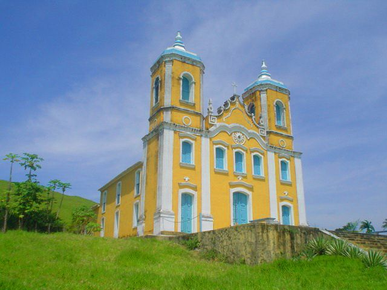

Santa Rosa de Lima
História
Conta-se que em tempos remotos a povoação era denominada de “Presa”, porque com as grandes enchentes do rio Sergipe os meios de comunicações eram impedidos pelas águas. A penetração no território deu-se em 1601, com a doação das sesmarias nas visinhanças dos rios Sergipe e Cotinguiba.
Pela lei nº 83, de 26 de outubro de 1884, foi a povoação elevada à categoria de vila já denominada nessa época de Santa Rosa - pertencente ao município de Divina Pastora. Dois anos depois era doada a uma capela construída pelos padres Jesuítas uma imagem de Santa Rosa, que originou o nome da vila.
Pelo Decreto Lei Estadual nº 377, de 31 de dezembro de 1943, foi mudada adenominação da Vila Santa Rosa para CAMBOATÁ. Dez anos depois, pela Lei Estadual nº 525-A, de 25 de novembro de 1953, foi criado o Município de Camboatá, que vinha em franco progresso, desmembrado, assim, do de Divina Pastora.
A Assembléia Estadual decretou e o Governo do Estado sancionou a Lei nº 554, que fixou a Divisão Administrativa e Judiciária do Estado, para o período de 1954/1958, tendo na ocasião mudado o topônimo do Município de Camboatá para Santa Rosa de Lima.
fonte: https://cidades.ibge.gov.br/brasil/se/santa-rosa-de-lima/historicoDados Gerais de acordo com o IBGE
| Prefeito (a) | Luiz Roberto Azevedo Santos Júnior |
| Vice-Prefeito (a) | Alfonso Kulkamp |
| Site do município | https://www.santarosadelima.se.gov.br/ |
| Área territorial | 67.672 km² |
| População estimada | 3.938 pessoas |
| Densidade demográfica | 57,9 hab/km² |
| IDHM | 0,592 |
| PIB per capita | R$ 12.102,07 |